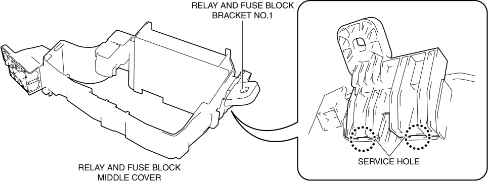
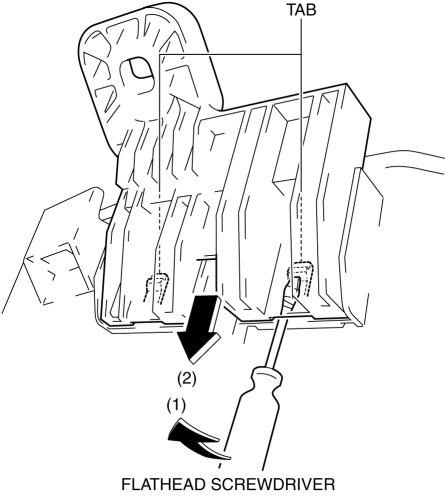
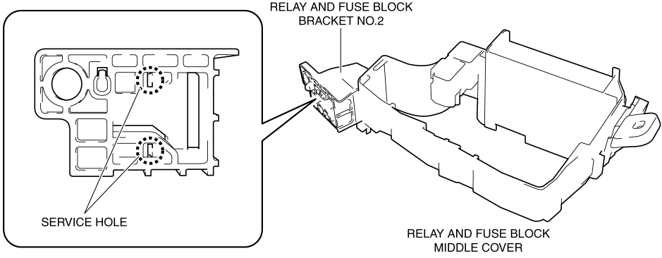
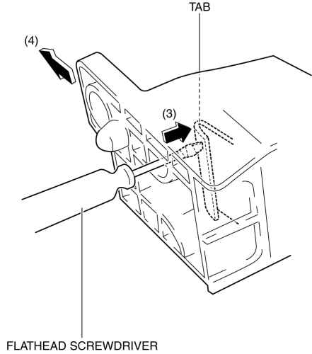

< Previous
Next >
2014 -
Mazda6 -
Body and Accessories
RELAY AND FUSE BLOCK MIDDLE COVER DISASSEMBLY/ASSEMBLY
1. Insert a tape-wrapped flathead screwdriver into the service hole in the position shown in the figure.

2. Move the flathead screwdriver in the direction of arrow (1) shown in the figure, and pull out the relay and fuse block bracket No.1 in the direction of arrow (2) shown in the figure to detach the relay and fuse block middle cover tab from the relay and fuse block bracket No.1.

3. Detach all the relay and fuse block middle cover tabs from the relay and fuse block bracket No.1 and remove the relay and fuse block bracket No.1 from the relay and fuse block middle cover.
4. Insert a flathead screwdriver into the service hole in the position shown in the figure.

5. Move the flathead screwdriver in the direction of arrow (3) shown in the figure, and pull out the relay and fuse block bracket No.2 in the direction of arrow (4) shown in the figure to detach the relay and fuse block middle cover tab from the relay and fuse block bracket No.2.

6. Remove the relay and fuse block bracket No.2.
7. Assemble in the reverse order of disassembly.
< Previous
Next >
© 2012 Mazda North American Operations, U.S.A.